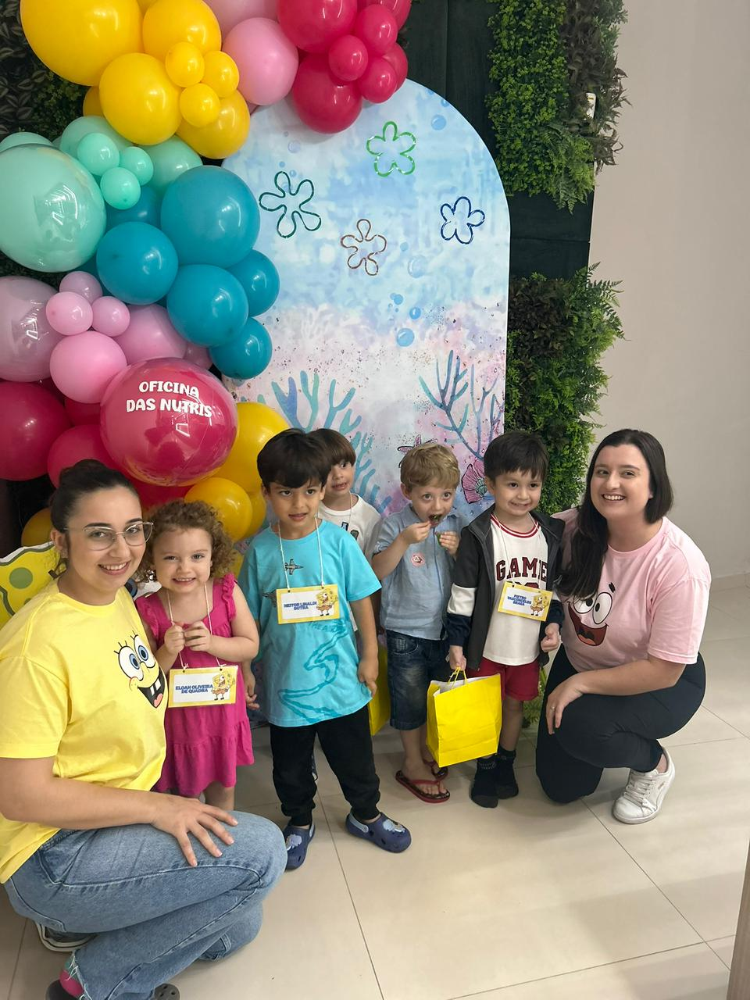
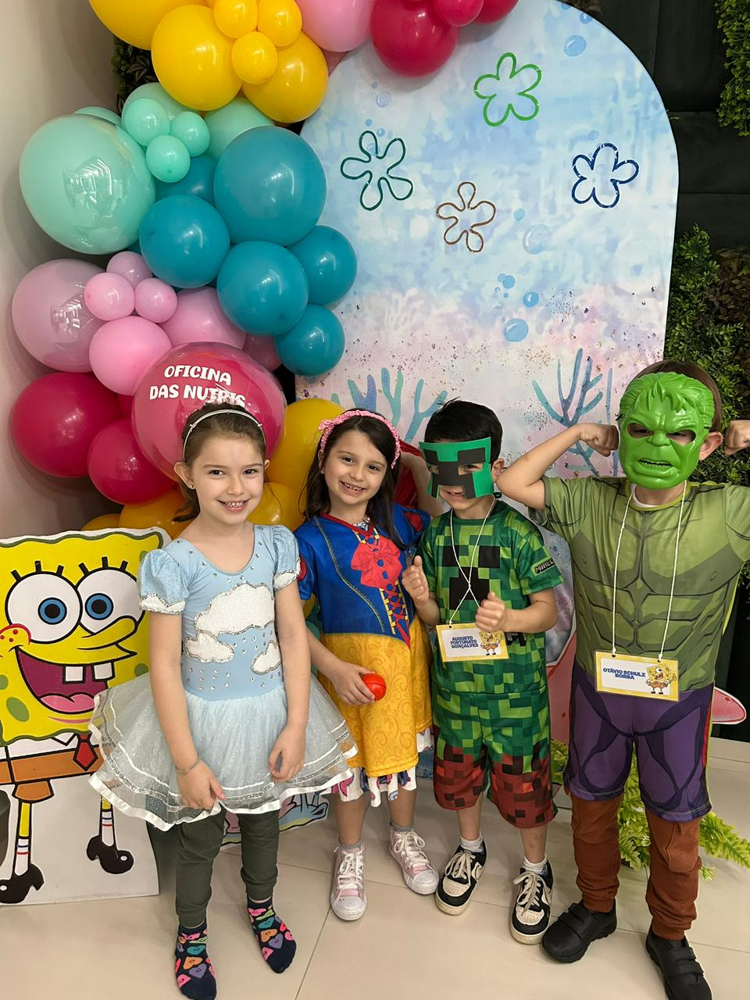
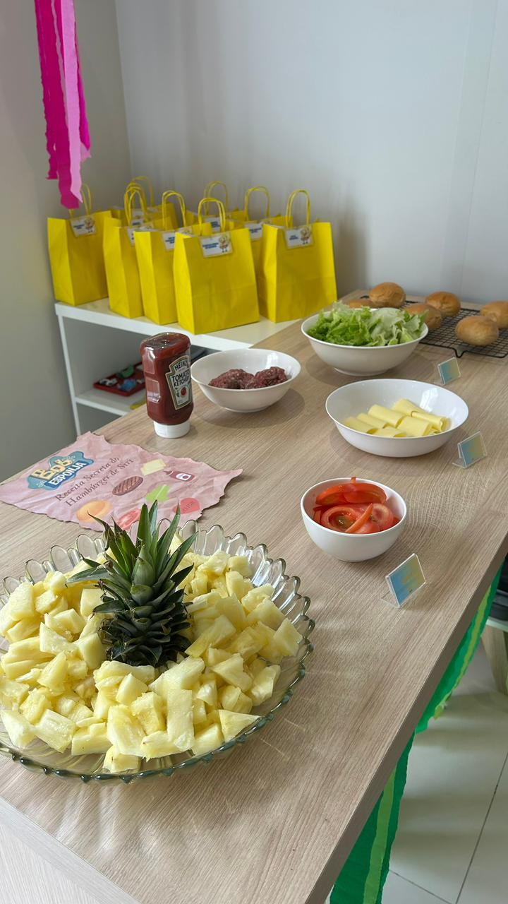
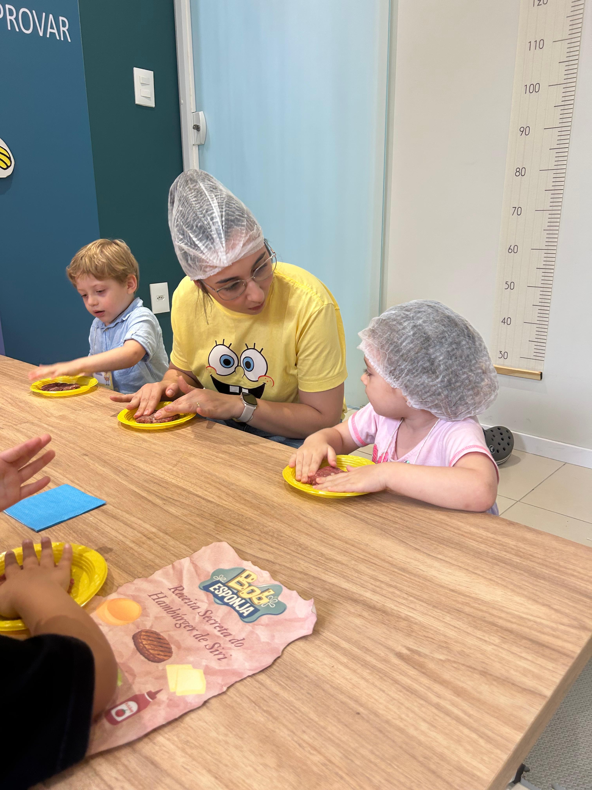
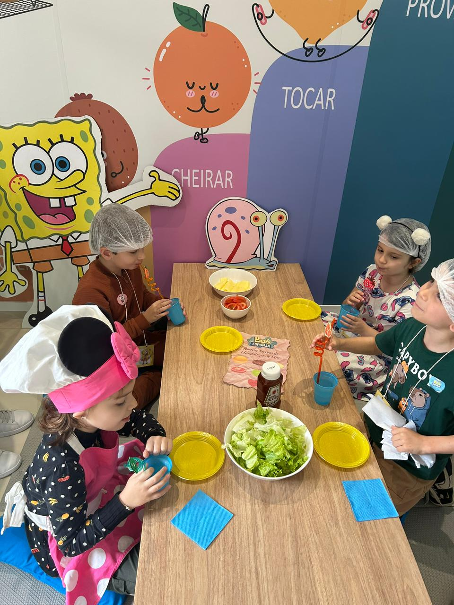
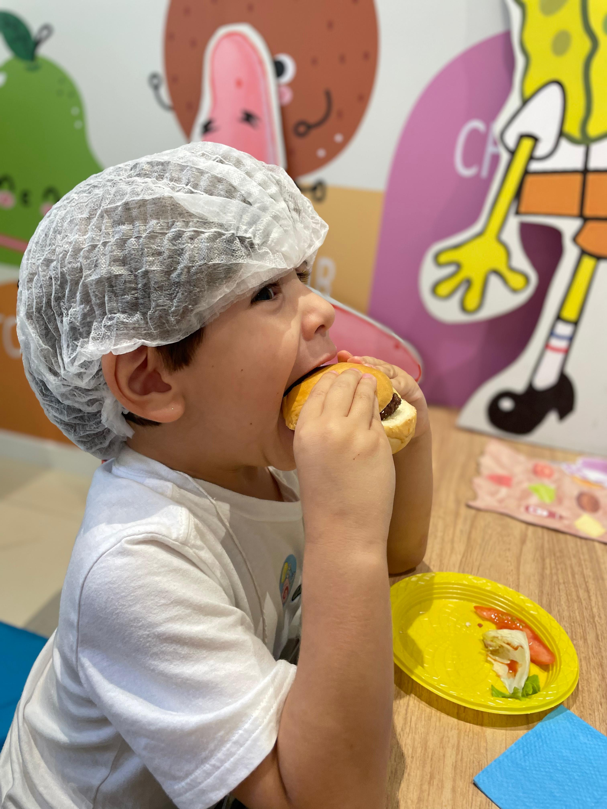
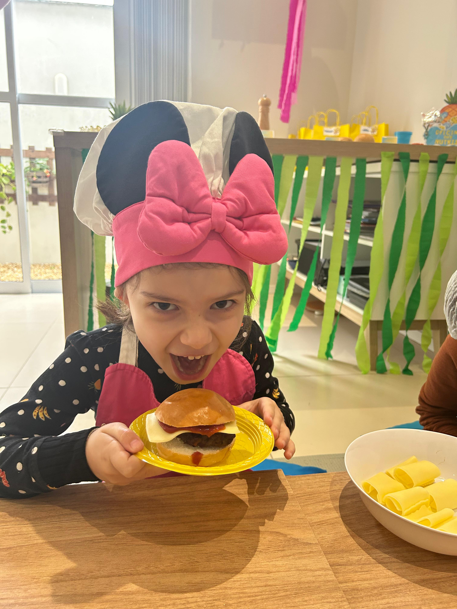
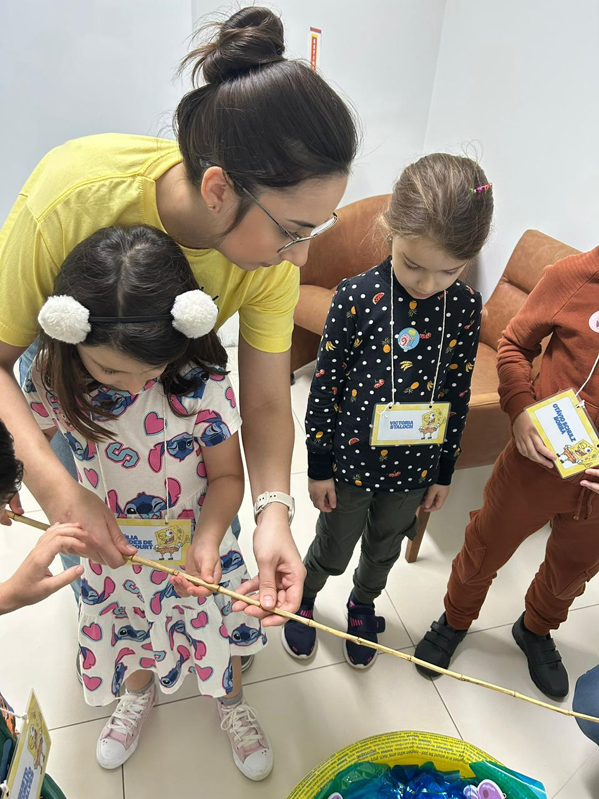
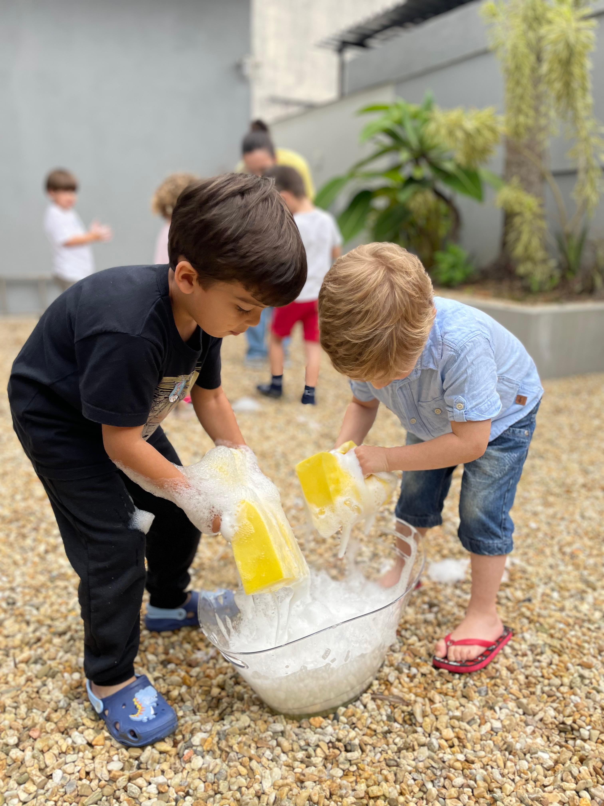

Oficinas de Culinária Infantil 👩🍳🍪
Na cozinha, os pequenos se tornam grandes chefs! 🥕
Entre receitas simples, cores e sabores, eles aprendem sobre alimentação saudável, higiene e criatividade, enquanto se divertem preparando suas próprias delícias.
Tudo de forma segura e cheia de sabor! 💚
Oficina do Bob Esponja 🧽🍍

😄 Turminha animada com as Nutris, prontinhas para começar a aventura do Bob Esponja!

🎭 Os pequenos chefs vieram até fantasiados! Criatividade e diversão não faltaram nessa turma.

🥬 Ingredientes prontos e coloridos na mesa - que comece a montagem do lanche mais famoso da Fenda do Biquíni!

👩🍳 Mão na massa! As crianças e a Nutri montando o delicioso Hambúrguer de Siri com muito capricho.

🍔 Expectativa lá no alto! Todos aguardando o famoso Hambúrguer de Siri ficar pronto.

🤤 Aquele momento da primeira mordida... sucesso total!

📸 Um clique especial com o Hambúrguer de Siri em mãos — orgulho do chef mirim!

🎣 Caça às águas-vivas! Diversão garantida na brincadeira inspirada no fundo do mar.

💦 Corrida das esponjas! A brincadeira que uniu risadas, trabalho em equipe e muita energia!
⚠️ Em breve teremos novas oficinas! Fique de olho no Instagram @nutrigabyroncaglio para acompanhar as próximas datas e novidades.